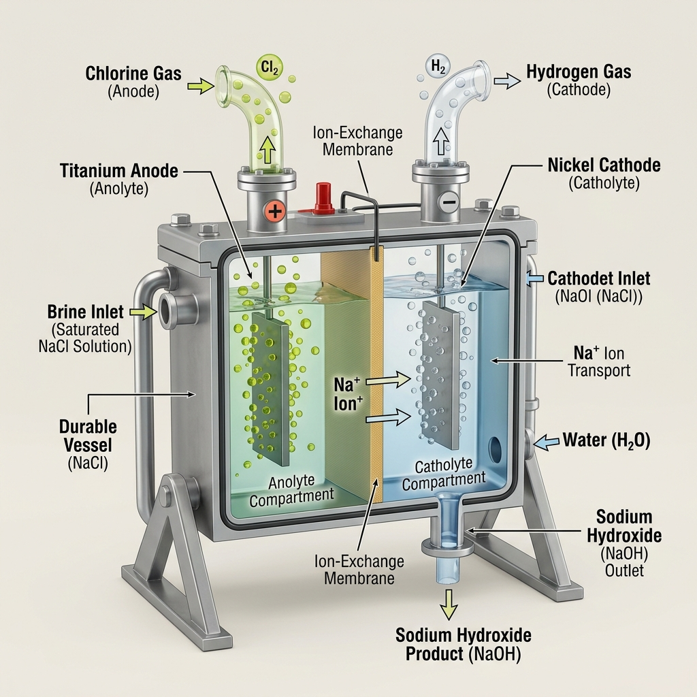

Chapter 02 | High-Fidelity Board Study Module
Indicators are substances that change their color (or smell) in the presence of an acid or a base. For board exams, focus on the 3 categories:
Procedure: Collect samples of $HCl, H_2SO_4, HNO_3, CH_3COOH$ (Acids) and $NaOH, Ca(OH)_2, KOH, Mg(OH)_2, NH_4OH$ (Bases). Test each with Litmus, Phenolphthalein, and Methyl Orange.
Observation Summary: Acids turn Blue Litmus Red. Bases turn Red Litmus Blue and Phenolphthalein Pink.
| Indicator Type | Example | In Acid | In Base |
|---|---|---|---|
| Natural | Litmus | Red | Blue |
| Natural | Turmeric | No Change (Yellow) | Reddish-Brown |
| Synthetic | Phenolphthalein | Colorless | Pink |
| Synthetic | Methyl Orange | Red | Yellow |
| Natural | Flowers (Hydrangea/Petunia) | Blue | Pink/Red |

Fig: Color variations in common indicators
Substances whose odour (smell) changes in acidic or basic media. Examples: Onion, Vanilla, Clove Oil.
Board Tip: In basic media (like NaOH), the smell of onion or vanilla vanishes completely.
Procedure: Add Zinc granules to dilute $H_2SO_4$.
Observation: Gas bubbles evolve. When a burning candle is brought near the gas, it burns with a 'Pop' sound.
Equation: $Zn + H_2SO_4 \rightarrow ZnSO_4 + H_2\uparrow$
Conclusion: Acid + Metal $\rightarrow$ Salt + Hydrogen gas.

Reaction: $Zn + 2NaOH \rightarrow Na_2ZnO_2 + H_2\uparrow$
Key Product: Sodium Zincate. Note that such reactions are NOT possible with all metals.
Reaction: $Na_2CO_3 + 2HCl \rightarrow 2NaCl + H_2O + CO_2\uparrow$
The Lime Water Test: Pass $CO_2$ through lime water $Ca(OH)_2$:
• Short duration: Turns milky ($CaCO_3$ white precipitate forms).
• Excess $CO_2$: Milkiness disappears due to soluble $Ca(HCO_3)_2$ formation.
[IMAGE PLACEHOLDER: Activity 2.5 Setup - $CO_2$ through Lime Water]
Procedure: Add Phenolphthalein to $NaOH$ (turns pink). Add $HCl$ drop by drop until color vanishes. Then add $NaOH$ again.
Result: Pink color reappears when base is in excess. This shows the reversible nature of indicator color change during neutralization.
Reaction: $CuO (\text{Black}) + 2HCl \rightarrow CuCl_2 (\text{Blue-Green}) + H_2O$
Inference: Since metallic oxides react with acids to give salt and water, they are Basic Oxides.
When an acid and a base react, they cancel each other out to form Salt and Water.
General Formula: $Acid + Base \rightarrow Salt + Water + Heat$
Example: $NaOH(aq) + HCl(aq) \rightarrow NaCl(aq) + H_2O(l)$
All Acids generate $H^+(aq)$ ions in water. These ions combine with water to form Hydronium ions ($H_3O^+$).
$HCl + H_2O \rightarrow H_3O^+ + Cl^-$
All Bases generate $OH^-$ ions in water. Bases that are soluble in water are called Alkalis.
Always add Acid to Water slowly with constant stirring. Never add water to concentrated acid. The reaction is highly exothermic; adding water can cause the mixture to splash out and cause severe burns.
[IMAGE PLACEHOLDER: Activity 2.10 - Correct way of Dilution (Acid to Water)]
Experiment: Test conductivity of Glucose, Alcohol, $HCl, NaOH$.
Result: Bulb glows for $HCl$ and $NaOH$. It does NOT glow for Glucose and Alcohol (as they do not produce ions).
[IMAGE PLACEHOLDER: Activity 2.8 - Acid/Base Conductivity Circuit]
Experiment: Prepare $HCl$ gas. Test with dry and wet litmus paper.
Result: Only Wet Litmus changes color. This proves that $H^+$ ions are only produced in the presence of water.
[IMAGE PLACEHOLDER: Activity 2.9 - Preparation of $HCl$ gas]
The pH scale measures the strength of acids and bases from 0 (highly acidic) to 14 (highly alkaline). 7 is Neutral.

Fig: The Universal pH Scale Gradient
| Gastric Juice | ~1.2 (Highly Acidic) |
| Lemon Juice | ~2.2 |
| Pure Water / Blood | 7.4 (Slightly Basic) |
| Milk of Magnesia | 10.0 (Basic) |
| Sodium Hydroxide | ~14.0 (Strongly Alkaline) |
| Context | pH Level / Importance |
|---|---|
| Human Body | Functions within 7.0 to 7.8. |
| Acid Rain | pH of rain water falls below 5.6. |
| Digestive System | Stomach produces HCl. Use Antacids (Milk of Magnesia) to neutralize excess. |
| Tooth Decay | Starts when mouth pH is lower than 5.5. Use basic toothpaste. |
| Soil pH | Plants require a specific pH range for healthy growth. Test soil pH and treat with Lime (Basic) if too acidic. |
| Self Defense | Bee/Ant sting injects Methanoic Acid. Use mild base like Baking Soda. |
| Nettle Leaves | Sting causes burning pain due to Methanoic Acid. Remedy: Rub leaf of Dock Plant (found nearby in wild). |
Common Salt ($NaCl$) is the "Raw Material" for many important industrial chemicals. In nature, it is found as **Rock Salt** (large brown crystals due to impurities), which is mined like coal.

Fig: The NaCl Derivative Ecosystem (The Salt Family)
Electrolysis of aqueous sodium chloride (Brine).
Equation: $2NaCl(aq) + 2H_2O(l) \rightarrow 2NaOH(aq) + Cl_2(g) + H_2(g)$
• Anode ($Cl_2$): Used in water treatment, PVC, disinfectants.
• Cathode ($H_2$): Used in fuels, margarine, ammonia for fertilizers.
• NaOH: Used in soaps, paper making, degreasing metals.

Produced by action of chlorine on dry slaked lime.
Equation: $Ca(OH)_2 + Cl_2 \rightarrow CaOCl_2 + H_2O$
Uses:
• Bleaching cotton and linen in textile industry.
• Bleaching wood pulp in paper factories.
• Oxidizing agent in many chemical industries.
• Disinfecting drinking water to make it germ-free.
Sodium Hydrogen Carbonate. A mild, non-corrosive basic salt.
Preparation (Solvay Process):
$NaCl + H_2O + CO_2 + NH_3 \rightarrow NH_4Cl + NaHCO_3$
On Heating: $2NaHCO_3 \xrightarrow{\Delta} Na_2CO_3 + H_2O + CO_2\uparrow$
Uses: Making Baking Powder (mixture of soda and tartaric acid), Antacid, Soda-acid fire extinguishers.
Recrystallization of sodium carbonate gives washing soda.
Equation: $Na_2CO_3 + 10H_2O \rightarrow Na_2CO_3 \cdot 10H_2O$
Uses:
• Glass, soap, and paper industries.
• Manufacture of sodium compounds like Borax.
• Cleaning agent for domestic purposes.
• Removing **permanent hardness** of water.
Chemical name: **Calcium Sulphate Hemihydrate**. Obtained by heating Gypsum ($CaSO_4 \cdot 2H_2O$) at **373 K** (100°C).
Reaction: $CaSO_4 \cdot \frac{1}{2}H_2O + 1\frac{1}{2}H_2O \rightarrow CaSO_4 \cdot 2H_2O$ (Sets into hard solid mass).
Uses: Doctors use it for supporting fractured bones in the right position, making toys, materials for decoration, and for making surfaces smooth.
Reason: Water of crystallization is the fixed number of water molecules present in one formula unit of salt.
Hydrated CuSO4: $CuSO_4 \cdot 5H_2O$
[IMAGE PLACEHOLDER: Activity 2.15 - Heating Copper Sulphate]